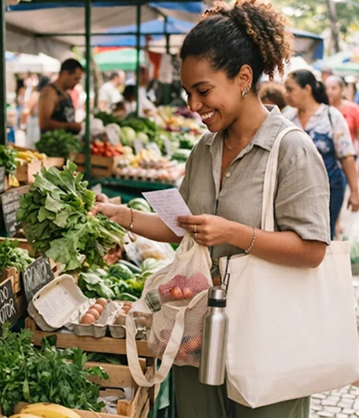
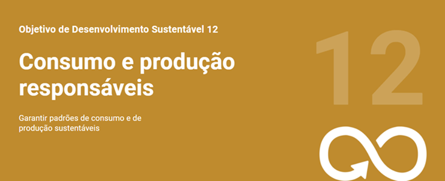

Menos desperdício. Mais consciência.
Pequenas escolhas podem transformar nosso futuro.
O desperdício de alimentos traz graves consequências para o meio ambiente e para a sociedade. Com planejamento e consumo consciente, podemos evitar compras desnecessárias, aproveitar melhor os ingredientes e construir um futuro mais sustentável. Pensando nisso, criamos este projeto para reduzir o descarte de comida e incentivar escolhas mais responsáveis.

O impacto de nossas escolhas
-
Menos lixo
-
Mais economia
-
Mais cuidado

E qual é a relação com o totaliza?
Ao organizar suas compras e acompanhar os gastos, você pode evitar excessos, aproveitar
melhor os alimento e
contribuir para hábitos de consumo mais responsáveis.
Dicas
- Aproveite os alimentos: utilize sobras de maneira consciente e evite descartá-las sem necessidade.
- Faça uma lista de compras: compre apenas o que realmente precisa.
- Armazene corretamente: conserve os alimentos de acordo com suas necessidades.
- Confira o que já tem em casa: evite comprar produtos repetidos.